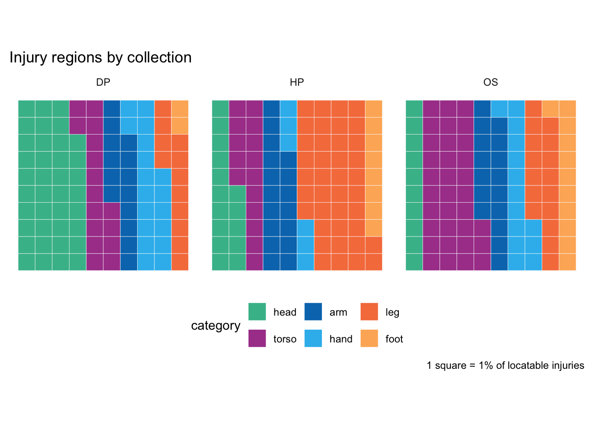

Mapping injury locations to broader regions for analysis
Author
Sharon Howard
Published
28 April 2025
Introduction
The Skin and Bone project data has extracted and separated out two kinds of injury information from the original datasets: types and locations of injuries. However, apart from some minor cleanup, the data consists of the original text of descriptions and there hasn’t been any further classification.
To do meaningful analysis and visualisations, I need to standardise and group that information into broader categories. Here I look at the process for grouping body locations into regions, for which I’ll make a lookup file to reuse in subsequent analysis.
A second post will look at the categorisation of injuries.
The regions
The injury regions are based on six anatomical groupings used by Madeleine Mant, who originally created the HP and OS data [at p.66 of her thesis].
head: included fractures to the cranium and facial skeleton.
torso: included fractures to the sternum, ribs, vertebrae, sacrum, and os coxae.
arm: included the shoulder girdle (scapula, clavicle) and long bones of the arm (humerus, radius, ulna).
leg: included the femur, tibia, fibula, and patella.
hand: included the carpals, metacarpals, and manual phalanges
foot: included the tarsals, metatarsals, and pedal phalanges.
A starting point
Code
## get data etc## shared packages etc ####source(here::here("R/shared.R")) ## aesthetics ####source(here::here("R/trimmings.R"))# any extra packages and functions should go herelibrary(reactable)## dp data ####dp_injuries_xlsx <-read_excel(here::here("data/v20231130/dp_injury.xlsx"), guess_max =100000) |>rowid_to_column()dp_injury_locations <- dp_injuries_xlsx |>select(rowid, body_location, injury, full_description)## skeletons ####os_injury_xlsx <-read_excel(here::here("data/v20231130/os_injury.xlsx") ) |>rowid_to_column()os_injury_locations <- os_injury_xlsx |>select(rowid, body_location, injury)## hospitals ####hp_injury_xlsx <-read_excel(here::here("data/v20231130/hp_injury.xlsx") , guess_max=18000) |># basic year fixesmutate(description_year =case_when( description_year>2000~parse_number(str_sub(as.character(description_year), 2, 5)), description_year<1760~NA, .default=description_year )) |>rowid_to_column()hp_injury_locations <- hp_injury_xlsx |>select(rowid, body_location, injury, full_description) |>mutate(body_location =str_remove(body_location, "\\bright +"))
The hospitals (HP) descriptions data is the most useful set for making an initial lookup file, as the descriptions are brief and consistent - they almost never include extra detail like side of body - so that in virtually all cases, the body_location column only consists of the name of a body part. The Digital Panopticon criminals (DP) and osteological (OS) datasets are both a bit more complicated.
NB that a significant proportion of descriptions don’t mention an injury location at all, so I’ll need an “unknown” category.
There are 104 distinct values in body_location (about a quarter of which join the regions_locations list without any further work).
Explore locations…
While most are easy to place, they’re an interesting mix of familiar, old-fashioned and technical that I needed to look up. (ilium? olecranon? axilla and maxilla?)
A handful can’t be placed: “stump” seems quite likely to be leg, but I don’t think that can be assumed; condyle apparently could be one of several.
I saved the list to a plain text file, and added a few locations that are in my list above but not used in these records. Since it’s a small number, manually grouped them per region, using a simple temporary format where the group name is listed first, prefixed with a hash. This can be converted to a two column lookup list quite easily.
The OS and DP location descriptions often contain more detail than those for HP, so I’ll use a regex strategy rather than simple joins for the lookups.
locations_by_region_rgx <-hp_locations_by_region |># drop body/side as they cause a few false positives filter(!injury_location %in%c("body", "side")) |>group_by(region) |>summarise(locations_rgx =glue_collapse(injury_location, sep="|")) |>ungroup() |>mutate(locations_rgx=glue("\\b({locations_rgx})")) arm_region <-pluck(locations_by_region_rgx, "locations_rgx", 1)foot_region <-pluck(locations_by_region_rgx, "locations_rgx", 2)hand_region <-pluck(locations_by_region_rgx, "locations_rgx", 3)head_region <-pluck(locations_by_region_rgx, "locations_rgx", 4)leg_region <-pluck(locations_by_region_rgx, "locations_rgx", 5)torso_region <-pluck(locations_by_region_rgx, "locations_rgx", 6)
The OS descriptions look rather different from both HP and DP. Both HP and DP are based on transcriptions of documents written by people working in historical institutions (the hospital records were written by medical professionals; I’m not quite so sure about all the officials who recorded the DP descriptions). In contrast, the OS data has been recorded by a modern researcher using a systematic methodology for identifying and describing fractures [Mant, p.60].
Most of the locations have been recorded twice, once using mostly non-technical language (“left forearm”) and then using more specific anatomical terms (“radius”). This gives me two chances to match a location to a region! (In the data they’re recorded in the same column using a pipe separator; I did need to separate them out and handle separately to avoid some false positives.)
All the records could be matched without needing to add any new terms to the lookup list.
os_locations_by_region <-os_injury_locations |>separate(body_location, into =c("location1", "location2", "extra"), sep=" *\\| *", extra ="merge", fill="right") |>mutate(location_region =case_when(str_detect(location1, arm_region) ~"arm",str_detect(location1, hand_region) ~"hand",str_detect(location1, foot_region) ~"foot",str_detect(location1, leg_region) ~"leg",str_detect(location1, head_region) ~"head",str_detect(location1, torso_region) ~"torso",# a few don't match on location1 column but do match on location2.str_detect(location2, arm_region) ~"arm",str_detect(location2, head_region) ~"head",str_detect(location2, leg_region) ~"leg",str_detect(location2, torso_region) ~"torso",str_detect(location2, foot_region) ~"foot",str_detect(location2, hand_region) ~"hand" )) |>count(location_region, location1, name="count")
DP locations need a bit more work. The body_location data is quite a bit messier than HP or OS, reflecting that the descriptions are more complex: injuries are more diverse than in the other two collections, and recording injuries wasn’t the records’ primary purpose so they can contain various kinds of information.
# A tibble: 10 × 1
full_description
<chr>
1 Scar over right eye, mole on left shoulder.
2 Scar right eye brow, mole on left shoulder, vaccination mark on left arm.
3 Scar on forehead, left eyebrow & wrist, lost front upper tooth.
4 Scar on forehead, 2 scar on right arm below the elbow and lost several teeth.
5 Scar on forehead and left of nose
6 Scars on forehead and nose, ears pierced
7 Scars on right knee, Ears pierced
8 Scar on right knee
9 Scar on right hand and on forehead, mole on nose.
10 Small Mole on left cheek, scar over left eyebrow, ears pierced
Most can be matched to the list; the exceptions needing some new additions to the list are variations in terminology (“forearm” or “collarbone”) or likely to be related to minor injuries that wouldn’t appear in hospital or skeleton records (“tooth/teeth”, “hair”).
However, there are also more locations that can’t be placed, in particular “nail”, “bone” and “fore”, which are very likely to be due to extraction failures. With this much bigger and messier collection, I just have to accept imperfection.
dp_locations_by_region <-dp_injury_locations |># initial tidying upmutate(body_location=str_to_lower(body_location)) |>mutate(body_location=str_trim(str_replace_all(body_location, "\\s\\s+", " "))) |>mutate(location_region =case_when(str_detect(body_location, arm_region) ~"arm",str_detect(body_location, hand_region) ~"hand",str_detect(body_location, foot_region) ~"foot",str_detect(body_location, leg_region) ~"leg",str_detect(body_location, head_region) ~"head",str_detect(body_location, torso_region) ~"torso",# put "side" and "body" in torso after more specific descriptions are accounted for# (some will be wrong...) body_location %in%c("side", "body") ~"torso",# differentiate empty locations from those that fail to match the listis.na(body_location) ~"unknown" )) |>count(location_region, body_location, name="count")|>mutate(rank=min_rank(desc(count))) |>relocate(rank)
Explore locations that failed to match…
Those that can be placed go into a supplementary text file, organised and added to the original. Then the full list can be saved to a final location as a CSV file for later reuse.
Results
A quick peek at the results, comparing the three collections.

There are some very marked differences between the collections.
DP has a much higher percentage of head injuries; closer inspection shows a lot of these are relatively superficial injuries that wouldn’t appear in the other two collections, like facial scars or missing teeth (the latter might often be more to do with poor dental health than injuries).
The largest category in the hospitals data is leg injuries (mostly fractures).
Skeletons show a lot more torso injuries, most of which are rib fractures.